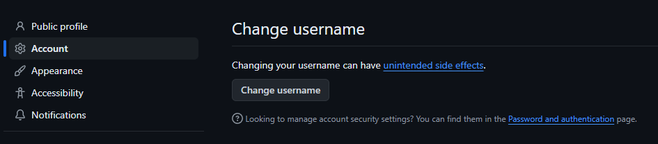
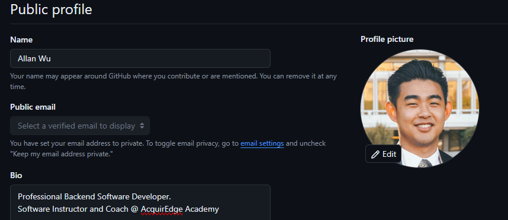
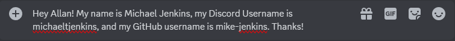

Page 4 of 6 - GitHub
Just like the rest of the software development industry (which includes related fields like Data Science), we will use GitHub a lot! Your GitHub account is going to hold and track essentially all of your coursework with us, so if you have not already created a GitHub account, sign up now.
If you have already signed up for a GitHub account, tyhen continue through the steps below to make sure your profile is up-to-date with useful information.
There are guidelines for students' GitHub profile pages to give you a headstart on having a more professional-looking GitHub profile. Make sure to make changes to your existing account if necessary.
GitHub Username 🧑💻
Your username should help instructors (and potential employers) easily identify you. Plus, more and more people are joining GitHub everyday, so if you can get a username that represents you professionally, you're in good luck.
What's a good GitHub username?
Let's say, for example, your full name is Michael Thomas Jenkins.
⛔ These are not good usernames.
mixMasterMike💩itsyaboimikey💩oldmanjenkins💩kittenbites💩
✅ These are good usernames!
michaeljenkins💯mike-jenkins👍michaeltjenkins👍miketjenkins👍mjenkins👍mtjenkins👍m-jenkins👍jenkins-mike👍
Try to use your first and last name or some combination that uses your middle name or initial. If you already have a username that is not-so-clear, please update it now.
Do I have to change my username?
No, you don't have to change your username. The police won't be showing up at your door. But, having a random username makes your GitHub profile look less professional. Once you have profeessional experience doing development work on your resume, you can change it to whatever you want. If you're truly desperate to keep your old GitHub username, you can create a new GitHub account with a new email address to hold onto it.
- Go to your Account settings page and click Change username.

- Choose a good username.
Full Name in Profile 🖊️
It's much easier for others to identify your code contributions when you have your full name set properly on GitHub. This is also true for our coursework.
- Go to your profile settings page.
- Make sure your full name is filled in for Name.
Choose a good profile picture 🖼️
Heere are a few example pictures. One of them is cute. One of them is funny. One of them is what we're looking for.
Of course, you don't need a professional head shot. A simple selfie is good enough. We want to put a face to the name and so will other GitHub users!
- Go to your profile settings page.
- Upload a new Profile Picture
Below is an example of a properly set up GitHub profile.

Notify an Instructor 💬
⚠️ This step is required before continuing.⚠️ We need to know your GitHub username to properly complete your computer setup.
Once you have double-checked your profile picture and your username so that they are as helpful as possible, send your GitHub username to your class's instructor via Discord with the following information:
- Your Full Name
- Your Discord username
- Your GitHub username
Some time after this, an instructor will assign your class role to you, and will return a message to you with their GitHub username, as well.

Double-check ✔️✔️
- [x] You have created a GitHub account.
- [x] You have a clear GitHub username.
- [x] Your full name is in your GitHub profile.
- [x] You are clearly visible in your GitHub profile picture.
- [x] You've sent your account information to an instructor via Discord.
Continue to Computer Setup ➡️
Wait for confirmation from your instructor before continuing.
You'll receive a Discord message and you are ready to move on to your computer setup.